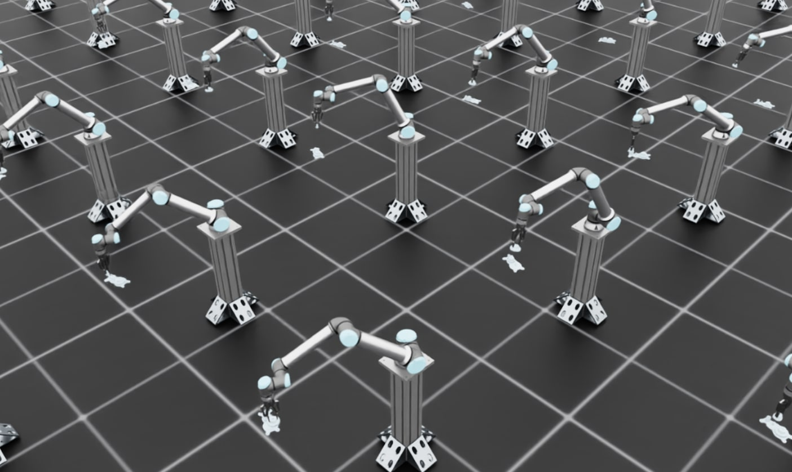

训练齿轮插入策略和 ROS 部署#
本教程将指导您如何训练一个可以从仿真迁移到真实机器人的齿轮插入装配强化学习（RL）策略。工作流程包含两个主要阶段:
在 Isaac Lab 中进行仿真训练: 在具有域随机化的高保真物理仿真中训练策略
使用 Isaac ROS 进行真实机器人部署: 使用 Isaac ROS 和自定义 ROS 推理节点将训练好的策略部署到真实硬件上
本教程介绍了使用 Isaac Lab 进行仿真到真实迁移的关键原则和最佳实践，并通过一个真实世界的示例进行说明:
UR10e 机器人配合 Robotiq 2F-140 夹爪或 2F-85 夹爪的齿轮装配任务
任务详情:
齿轮装配策略的工作方式如下:
初始状态: 策略假设在回合开始时齿轮已被夹爪抓取
输入观测: 策略接收齿轮轴的位姿（位置和方向），即齿轮应该插入的位置，该信息来自单独的感知管线
策略输出: 策略输出增量关节位置（关节角度的增量变化）来控制机械臂并执行插入操作
泛化能力: 训练好的策略可以泛化到 3 种不同尺寸的齿轮，无需针对每种尺寸重新训练
仿真到真实迁移: 在 Isaac Lab 中训练的齿轮装配策略（左）成功部署到真实 UR10e 机器人（右）。#
该环境已成功部署到真实 UR10e 机器人上，无需依赖 IsaacLab。
**本教程范围: **
本教程专注于 Isaac Lab 中仿真到真实迁移工作流程的 训练部分。有关在真实机器人上的完整部署工作流程，包括设置视觉管线、机器人接口和 ROS 推理节点以在真实硬件上运行训练好的策略的详细步骤，请参阅 Isaac ROS 文档 。
概述#
成功的仿真到真实迁移需要解决三个基本方面:
输入一致性: 确保策略在仿真中接收的观测与真实机器人上可用的观测相匹配
系统响应一致性: 确保机器人和环境在仿真中对动作的响应与在现实中相同
输出一致性: 确保在 Isaac Lab 中应用于策略输出的任何后处理也应用于真实世界推理
当这三个方面都得到妥善解决时，纯粹在仿真中训练的策略可以在真实硬件上实现稳健的性能，而无需任何真实世界的训练数据。
调试技巧: 当策略在真实机器人上失败时，最好的调试方法是将真实机器人设置为与仿真中相同的初始观测，然后比较控制器/系统的响应方式。这可以隔离问题是来自观测不匹配（输入一致性）还是物理/控制器不匹配（系统响应一致性）。
第一部分: 输入一致性#
策略接收的观测必须在仿真和现实之间保持一致。这意味着:
观测空间应仅包含真实传感器可提供的信息
应适当建模传感器噪声和延迟
使用真实机器人可用的观测#
您的仿真环境应仅使用真实机器人上可用的观测，而不使用部署时不可用的 "特权" 信息。
观测规范: Isaac-Deploy-GearAssembly-UR10e-2F140-v0#
齿轮装配环境同时使用本体感受和外感受（视觉）观测:
观测 |
维度 |
真实世界来源 |
训练中的噪声 |
|---|---|---|---|
|
6（UR10e 机械臂关节） |
UR10e 控制器 |
无（本体感受） |
|
6（UR10e 机械臂关节） |
UR10e 控制器 |
无（本体感受） |
|
3（x, y, z 位置） |
FoundationPose + RealSense 深度 |
±0.005 m（5mm，来自 FoundationPose + RealSense 深度管线的估计误差） |
|
4（四元数方向） |
FoundationPose + RealSense 深度 |
每个分量 ±0.01（约 5° 角度误差，来自 FoundationPose + RealSense 深度管线的估计误差） |
**实现: **
from isaaclab.utils.noise import AdditiveUniformNoiseCfg as Unoise
@configclass
class PolicyCfg(ObsGroup):
"""Observations for policy group."""
# Robot joint states - NO noise for proprioceptive observations
joint_pos = ObsTerm(
func=mdp.joint_pos,
params={"asset_cfg": SceneEntityCfg("robot", joint_names=["shoulder_pan_joint", ...])},
)
joint_vel = ObsTerm(
func=mdp.joint_vel,
params={"asset_cfg": SceneEntityCfg("robot", joint_names=["shoulder_pan_joint", ...])},
)
# Gear shaft pose from FoundationPose perception
# ADD noise for exteroceptive (vision-based) observations
# Calibrated to match FoundationPose + RealSense D435 error
# Typical error: 3-8mm position, 3-7° orientation
gear_shaft_pos = ObsTerm(
func=mdp.gear_shaft_pos_w,
params={"asset_cfg": SceneEntityCfg("factory_gear_base")},
noise=Unoise(n_min=-0.005, n_max=0.005), # ±5mm
)
# Quaternion noise: small uniform noise on each component
# Results in ~5° orientation error
gear_shaft_quat = ObsTerm(
func=mdp.gear_shaft_quat_w,
params={"asset_cfg": SceneEntityCfg("factory_gear_base")},
noise=Unoise(n_min=-0.01, n_max=0.01),
)
def __post_init__(self):
self.enable_corruption = True # Enable for perception observations only
self.concatenate_terms = True
为什么本体感受观测不添加噪声？
根据经验，我们发现在本体感受观测（关节位置和速度）上不添加噪声训练的策略可以很好地迁移到真实硬件。UR10e 控制器提供足够准确的关节状态反馈，因此对于这些任务，建模传感器噪声并不能改善仿真到真实的迁移效果。
第二部分: 系统响应一致性#
一旦观测保持一致，您需要确保仿真机器人和环境对动作的响应与真实系统相同。在本用例中，这涉及三个主要方面:
物理仿真参数（摩擦力、接触属性）
执行器建模（PD 控制器增益、力矩限制）
域随机化
物理参数调优#
准确的物理仿真对于接触密集型任务至关重要。关键参数包括:
摩擦系数（静态和动态）
接触求解器参数
材料属性
刚体属性
示例: 齿轮装配物理配置
齿轮装配任务需要准确的接触建模来进行插入。以下是摩擦力的配置方式:
# From joint_pos_env_cfg.py in Isaac-Deploy-GearAssembly-UR10e-2F140-v0
@configclass
class EventCfg:
"""Configuration for events including physics randomization."""
# Randomize friction for gear objects
small_gear_physics_material = EventTerm(
func=mdp.randomize_rigid_body_material,
mode="startup",
params={
"asset_cfg": SceneEntityCfg("factory_gear_small", body_names=".*"),
"static_friction_range": (0.75, 0.75), # Calibrated to real gear material
"dynamic_friction_range": (0.75, 0.75),
"restitution_range": (0.0, 0.0), # No bounce
"num_buckets": 16,
},
)
# Similar configuration for gripper fingers
robot_physics_material = EventTerm(
func=mdp.randomize_rigid_body_material,
mode="startup",
params={
"asset_cfg": SceneEntityCfg("robot", body_names=".*finger"),
"static_friction_range": (0.75, 0.75), # Calibrated to real gripper
"dynamic_friction_range": (0.75, 0.75),
"restitution_range": (0.0, 0.0),
"num_buckets": 16,
},
)
这些摩擦值（0.75）是通过迭代视觉比较确定的:
录制真实硬件上齿轮被抓取和操作的视频
在仿真中开始训练并观察实时仿真查看器
查找物理问题（穿透、不真实的滑动、接触不良）
调整摩擦系数和求解器参数并重试
视觉比较仿真和真实中齿轮在夹爪中的行为
重复调整直到行为匹配（无需等待完整的策略训练）
一旦物理看起来正常，使用无头模式进行训练并录制视频:
python scripts/reinforcement_learning/rsl_rl/train.py \ --task Isaac-Deploy-GearAssembly-UR10e-2F140-v0 \ --headless \ --video --video_length 800 --video_interval 5000
查看录制的视频并与真实硬件视频进行比较以验证物理行为
接触求解器配置
接触密集型操作需要仔细调优求解器。这些参数是通过与摩擦系数相同的迭代视觉比较过程进行校准的:
# Robot rigid body properties
rigid_props=sim_utils.RigidBodyPropertiesCfg(
disable_gravity=True, # Robot is mounted, no gravity
max_depenetration_velocity=5.0, # Control interpenetration resolution
linear_damping=0.0, # No artificial damping
angular_damping=0.0,
max_linear_velocity=1000.0,
max_angular_velocity=3666.0,
enable_gyroscopic_forces=True, # Important for accurate dynamics
solver_position_iteration_count=4, # Balance accuracy vs performance
solver_velocity_iteration_count=1,
max_contact_impulse=1e32, # Allow large contact forces
),
重要: solver_position_iteration_count 是接触密集型任务的关键参数。增加此值可以提高碰撞仿真稳定性并减少穿透问题，但也会增加仿真和训练时间。对于齿轮装配任务，我们使用 solver_position_iteration_count=4 作为物理精度和计算性能之间的平衡。如果您观察到穿透或不稳定的接触，请尝试增加到 8 或 16，但要预期训练会变慢。
# Articulation properties
articulation_props=sim_utils.ArticulationRootPropertiesCfg(
enabled_self_collisions=False,
solver_position_iteration_count=4,
solver_velocity_iteration_count=1,
),
# Contact properties
collision_props=sim_utils.CollisionPropertiesCfg(
contact_offset=0.005, # 5mm contact detection distance
rest_offset=0.0, # Objects touch at 0 distance
),
执行器建模#
准确的执行器建模确保仿真机器人的运动与真实机器人相同。这包括:
PD 控制器增益（刚度和阻尼）
力矩和速度限制
关节摩擦
控制器选择: 阻抗控制
对于 UR10e 部署，我们使用阻抗控制器接口。与更复杂的控制器（例如操作空间控制、混合力-位置控制）相比，使用像阻抗控制这样更简单的控制器可以减少仿真和现实之间的差异。更简单的控制器:
仿真和真实之间可能不匹配的参数更少
在仿真中更容易准确建模
具有更可预测的行为，更容易复制
减少控制器复杂性作为仿真-真实差距的来源
示例: UR10e 执行器配置
# Default UR10e actuator configuration
actuators = {
"arm": ImplicitActuatorCfg(
joint_names_expr=["shoulder_pan_joint", "shoulder_lift_joint",
"elbow_joint", "wrist_1_joint", "wrist_2_joint", "wrist_3_joint"],
effort_limit=87.0, # From UR10e specifications
velocity_limit=2.0, # From UR10e specifications
stiffness=800.0, # Calibrated to match real behavior
damping=40.0, # Calibrated to match real behavior
),
}
执行器参数的域随机化
为了考虑真实机器人行为的变化，在训练期间随机化执行器增益:
# From EventCfg in the Gear Assembly environment
robot_joint_stiffness_and_damping = EventTerm(
func=mdp.randomize_actuator_gains,
mode="reset",
params={
"asset_cfg": SceneEntityCfg("robot", joint_names=["shoulder_.*", "elbow_.*", "wrist_.*"]),
"stiffness_distribution_params": (0.75, 1.5), # 75% to 150% of nominal
"damping_distribution_params": (0.3, 3.0), # 30% to 300% of nominal
"operation": "scale",
"distribution": "log_uniform",
},
)
关节摩擦随机化
真实机器人的关节存在摩擦，摩擦随位置、速度和温度变化。对于使用阻抗控制器接口的 UR10e，我们观察到显著的静摩擦导致控制器无法达到目标关节位置。
表征真实机器人行为:
为了量化这种行为，我们绘制了真实机器人上阻抗控制器的阶跃响应，并观察到与命令设定点大约 0.25 度的接触偏移。这种稳态误差是由关节摩擦对抗控制器命令运动引起的。基于这些测量，我们在仿真中添加了关节摩擦建模来复制这种行为:
joint_friction = EventTerm(
func=mdp.randomize_joint_parameters,
mode="reset",
params={
"asset_cfg": SceneEntityCfg("robot", joint_names=["shoulder_.*", "elbow_.*", "wrist_.*"]),
"friction_distribution_params": (0.3, 0.7), # Add 0.3 to 0.7 Nm friction
"operation": "add",
"distribution": "uniform",
},
)
为什么关节摩擦很重要: 如果在仿真中不建模关节摩擦，策略会学习到期望命令的关节位置总是能够达到。在真实机器人上，静摩擦会阻止小动作并导致稳态误差。通过在训练中添加摩擦，策略学会考虑这些影响并命令适当更大的运动来克服摩擦。
通过动作缩放补偿静摩擦:
为了帮助策略克服真实机器人上的静摩擦，我们还增加了输出动作缩放。Isaac ROS 文档指出，与 2F-85 夹爪相比，需要更高的动作缩放（0.0325 vs 0.025）来克服更高的静摩擦。这种增加的缩放确保策略命令足够大以克服在阶跃响应分析中观察到的摩擦力。
动作空间设计#
您的动作空间应与真实机器人控制器可以执行的内容匹配。对于此任务，我们发现 增量关节位置控制 是最可靠的方法。
示例: 齿轮装配动作配置
# For contact-rich manipulation, smaller action scale for more precise control
self.joint_action_scale = 0.025 # ±2.5 degrees per step
self.actions.arm_action = mdp.RelativeJointPositionActionCfg(
asset_name="robot",
joint_names=["shoulder_pan_joint", "shoulder_lift_joint", "elbow_joint",
"wrist_1_joint", "wrist_2_joint", "wrist_3_joint"],
scale=self.joint_action_scale,
use_zero_offset=True,
)
动作缩放是一个关键的超参数，应根据以下因素进行调优:
任务精度要求（接触密集型任务需要更小的值）
控制频率（更高的频率允许更大的步长）
域随机化策略#
域随机化应覆盖您希望真实机器人执行的条件范围。增加随机化范围会使策略更难学习，但允许更大的输入和系统参数变化。关键是平衡训练难度和鲁棒性: 随机化足以覆盖真实世界的变化，但不要太多以至于策略无法有效学习。
位姿随机化
对于操作任务，随机化物体位姿以确保策略在整个工作空间中都能工作:
# From Gear Assembly environment
randomize_gears_and_base_pose = EventTerm(
func=gear_assembly_events.randomize_gears_and_base_pose,
mode="reset",
params={
"pose_range": {
"x": [-0.1, 0.1], # ±10cm
"y": [-0.25, 0.25], # ±25cm
"z": [-0.1, 0.1], # ±10cm
"roll": [-math.pi/90, math.pi/90], # ±2 degrees
"pitch": [-math.pi/90, math.pi/90], # ±2 degrees
"yaw": [-math.pi/6, math.pi/6], # ±30 degrees
},
"gear_pos_range": {
"x": [-0.02, 0.02], # ±2cm relative to base
"y": [-0.02, 0.02],
"z": [0.0575, 0.0775], # 5.75-7.75cm above base
},
"rot_randomization_range": {
"roll": [-math.pi/36, math.pi/36], # ±5 degrees
"pitch": [-math.pi/36, math.pi/36],
"yaw": [-math.pi/36, math.pi/36],
},
},
)
初始状态随机化
随机化机器人的初始配置有助于策略处理不同的起始条件:
set_robot_to_grasp_pose = EventTerm(
func=gear_assembly_events.set_robot_to_grasp_pose,
mode="reset",
params={
"robot_asset_cfg": SceneEntityCfg("robot"),
"rot_offset": [0.0, math.sqrt(2)/2, math.sqrt(2)/2, 0.0], # Base gripper orientation
"pos_randomization_range": {
"x": [-0.0, 0.0],
"y": [-0.005, 0.005], # ±5mm variation
"z": [-0.003, 0.003], # ±3mm variation
},
"gripper_type": "2f_140",
},
)
第三部分: 在 Isaac Lab 中训练策略#
现在我们已经介绍了仿真到真实迁移的关键原则，让我们在 Isaac Lab 中训练齿轮装配策略。
步骤 1: 可视化环境#
首先，启动少量环境的训练并启用可视化，以验证环境设置正确:
# Launch training with visualization
python scripts/reinforcement_learning/rsl_rl/train.py \
--task Isaac-Deploy-GearAssembly-UR10e-2F140-v0 \
--num_envs 4
备注
对于 Robotiq 2F-85 夹爪，请改用 --task Isaac-Deploy-GearAssembly-UR10e-2F85-v0 。
这将打开 Isaac Sim 查看器，您可以在其中实时观察训练过程。

训练可视化显示多个并行环境中机器人抓取齿轮。#
预期效果:
在训练的早期阶段，您应该看到机器人在移动，夹爪抓着齿轮，但它们还不能成功插入齿轮。这是预期的行为，因为策略仍在学习中。机器人会将抓取的齿轮向各个方向移动。一旦您验证环境看起来正确，停止训练（Ctrl+C）并继续进行全规模训练。
步骤 2: 带视频录制的全规模训练#
现在在无头模式下启动更多并行环境的完整训练以加快训练速度。我们还将启用视频录制来监控进度:
# Full training with video recording
python scripts/reinforcement_learning/rsl_rl/train.py \
--task Isaac-Deploy-GearAssembly-UR10e-2F140-v0 \
--headless \
--num_envs 256 \
--video --video_length 800 --video_interval 5000
此命令将:
运行 256 个并行环境以进行高效训练
在无头模式下运行（无可视化）以获得最佳性能
每 5000 步录制视频以监控训练进度
每个视频保存 800 帧
训练一个稳健的插入策略通常需要约 12-24 小时。视频将保存在 logs 目录中，可以查看以评估训练期间的策略性能。
备注
GPU 内存注意事项: 默认配置使用 256 个并行环境，这应该适用于大多数现代 GPU（例如 RTX 3090、RTX 4090、A100）。为了获得更好的仿真到真实迁移性能，您可以在 gear_assembly_env_cfg.py 和 joint_pos_env_cfg.py 中将 solver_position_iteration_count 从 4 增加到 196 以获得更真实的接触仿真，但这需要更大的 GPU（例如具有 40GB+ VRAM 的 RTX PRO 6000）。更高的求解器迭代次数可以减少穿透并提高接触稳定性，但会显著增加 GPU 内存使用量。
使用 TensorBoard 监控训练进度:
您可以使用 TensorBoard 实时监控训练指标。打开一个新终端并运行:
./isaaclab.sh -p -m tensorboard.main --logdir <log_dir>
将 <log_dir> 替换为您的训练日志路径（例如 logs/rsl_rl/gear_assembly_ur10e/2025-11-19_19-31-01 ）。TensorBoard 将显示奖励、回合长度和其他指标的图表。验证奖励在迭代过程中是否增加，以确保策略正在成功学习。
步骤 3: 部署到真实机器人#
训练完成后，按照 Isaac ROS 推理文档 部署您的策略。
Isaac ROS 部署管线直接使用训练好的模型检查点（ .pt 文件）以及训练期间生成的 agent.yaml 和 env.yaml 配置文件。无需额外的导出步骤。
部署管线使用 Isaac ROS 和自定义 ROS 推理节点在真实硬件上运行策略。管线包括:
感知: 基于相机的位姿估计（FoundationPose、Segment Anything）
运动规划: cuMotion 用于无碰撞轨迹
策略推理: 您训练好的策略在自定义 ROS 推理节点中以控制频率运行
机器人控制: 执行命令的底层控制器
故障排除#
本节介绍您在训练期间可能遇到的常见错误及其解决方案。
PhysX 碰撞堆栈溢出#
错误消息:
PhysX error: PxGpuDynamicsMemoryConfig::collisionStackSize buffer overflow detected,
please increase its size to at least 269452544 in the scene desc!
Contacts have been dropped.
原因: 当 GPU 碰撞检测缓冲区对于正在仿真的接触数量来说太小时，会发生此错误。这在齿轮装配等接触密集型环境中很常见。
解决方案: 在 gear_assembly_env_cfg.py 中增加 gpu_collision_stack_size 参数:
# In GearAssemblyEnvCfg class
sim: SimulationCfg = SimulationCfg(
physx=PhysxCfg(
gpu_collision_stack_size=2**31, # Increase this value if you see overflow errors
gpu_max_rigid_contact_count=2**23,
gpu_max_rigid_patch_count=2**23,
),
)
错误消息会建议最小大小。将 gpu_collision_stack_size 设置为至少推荐的值（例如，如果错误提示 "至少 269452544" ，则将其设置为 2**28 或 2**29 ）。请注意，增加此值会增加 GPU 内存使用量。
CUDA 内存不足#
错误消息:
torch.OutOfMemoryError: CUDA out of memory.
**原因: ** GPU 没有足够的内存来使用当前仿真参数运行请求的并行环境数量。
解决方案（按优先顺序）:
减少并行环境数量:
python scripts/reinforcement_learning/rsl_rl/train.py \ --task Isaac-Deploy-GearAssembly-UR10e-2F140-v0 \ --headless \ --num_envs 128 # Reduce from 256 to 128, 64, etc.
权衡: 使用更少的环境会减少每次训练迭代的样本多样性，可能会减慢训练收敛速度。您可能需要训练更多迭代才能达到相同的性能。但是，最终的策略质量应该相似。
**如果使用增加的求解器迭代次数**（高于默认值 4 的值）:
在
gear_assembly_env_cfg.py和joint_pos_env_cfg.py中，将solver_position_iteration_count减少回默认值 4，或使用中间值如 8 或 16:rigid_props=sim_utils.RigidBodyPropertiesCfg( solver_position_iteration_count=4, # Use default value # ... other parameters ), articulation_props=sim_utils.ArticulationRootPropertiesCfg( solver_position_iteration_count=4, # Use default value # ... other parameters ),
权衡: 较低的求解器迭代次数可能导致接触动力学不太真实且穿透问题更多。默认值 4 为大多数用例提供了良好的平衡。
在训练期间禁用视频录制:
移除
--video标志以节省 GPU 内存:python scripts/reinforcement_learning/rsl_rl/train.py \ --task Isaac-Deploy-GearAssembly-UR10e-2F140-v0 \ --headless \ --num_envs 256
您可以随时使用可视化评估训练好的策略。
更多资源#
IndustReal: Transferring Contact-Rich Assembly Tasks from Simulation to Reality
FORGE: Force-Guided Exploration for Robust Contact-Rich Manipulation under Uncertainty
全身控制器的仿真到真实策略迁移: Sim-to-Real 策略转移 - 展示如何使用 Isaac Lab 和 Newton 后端训练和部署腿足机器人的全身控制器
RL 训练教程: 与 RL Agent 进行训练